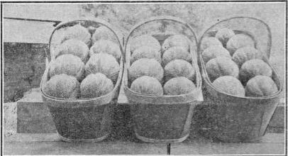

517. Marketing Muskmelon
Description
This section is from the book "Vegetable Gardening", by Ralph L. Watts. Also available from Amazon: Vegetable Gardening.
517. Marketing Muskmelon
The time of picking depends mainly upon the distance from market. If to be sold locally, the melons should be allowed to ripen fully on the vine. When for distant shipment, the usual plan is to pick the fruit when it will separate readily from the stem, which should be left attached to the vine. Cracking about the stem on the Gem type of melons indicates that ripening is in progress and that the fruit will part readily from the vine. While melons are often pulled before they have reached this point, it is always done at the sacrifice of quality. Considerable experience is required to decide just when each melon is ready for market, especially if an attempt is made to pick them before they have changed to the characteristic gray color desired by all markets. To secure uniformity of ripeness the plantation should be picked over every day.
A great many growers do not grade their melons.
This is just as serious a mistake as the failure to grade apples before marketing. The extra care assists dealers in meeting the demand from different classes of trade and increases profits for the producer. It is necessary to make three grades, except toward the close of the season, when two will serve better. The three grades are variously designated. In Illinois they are termed, fancy, No. I and No. 2, besides culls. The Illinois Experiment Station (111. Sta. Bul. 124, p. 303) gives the following information in regard to this important matter:
"The quality is the primary factor which determines the grade of a melon, though size and condition are also to be considered. Extremely high quality and uniformity in size and condition are essential in the making of a fancy grade. The size must also be normal and the packing perfect. The No. 1 grade should be of nearly as high quality as the fancy grade, but may include odd sizes, though the different specimens in a given package should be fairly uniform in size. This grade may include melons too large or too small for the fancy grade. The No. 2 grade should consist of the balance of the salable melons. These should be of fair quality and far superior to the flavorless culls sometimes shipped by unscrupulous growers.
"There is a close relation between the amount and character of netting and the quality of a melon, so that, after a little experience, it is possible to grade melons with extreme accuracy as to quality, on the basis of netting. As a rule, the denser and more fully developed the netting, the better the quality of the melon. The netting should stand out like whip cords on melons graded as fancy stock. Well-netted melons, in which the netting is not quite so prominent, together with off sizes of the best-netted melons, may be graded as No. 1. Specimens with still less netting, but in which the netting is fairly well developed, may be graded as No. 2. The extent to which the netting is developed is more important than the absolute amount of netting in determining whether a given specimen shall be graded as a No. 2 or a cull. Melons in which the netting is very poorly developed, as well as those without any netting, should be classed as culls. Cracked and overripe specimens must be graded as culls, even though of fine quality, for they would be likely to spoil before reaching the consumer".
A great variety of styles and sizes of packages is used in marketing muskmelons. Figure 49, c, illustrates the standard crate, which holds 45 melons, and is used by growers in Colorado and many other states. One of the best packs is the climax basket (Figure 89.) The dimensions of this basket used in Illinois (111. Sta. Bul. 124, p. 306) are as follows: Width of bottom, 6 inches; length of bottom, 16 1/2 inches; width of top, packed, 7 1/2 to 8 1/2 inches; length of top, 18 1/2 inches; depth (not including cover), 6 1/4 inches.
Fig. 89. muskmelons packed in climax baskets.
Smaller sizes of crates than the standard size are sometimes used. Bushel and half-bushel baskets are also popular in some sections for local sales. In all types of packages, the melons should be packed firmly, so they will not bruise or be injured in transit.
518. Yields
Nearly 345 standard crates of muskmelons an acre were produced at the Arizona station. It is not unusual for growers to harvest over 200 crates to the acre. In New Jersey 150 crates an acre is regarded good, and 100 crates is considered a satisfactory crop in Georgia.
519. Insect Enemies
The striped cucumber beetle is one of the most destructive insect pests. (See Cucumbers.) The melon louse is a serious enemy in some seasons. Infested plants should be destroyed as soon as discovered. The usual insecticides for aphides may also be employed, but the spraying of a field of melons when the plants have attained considerable size is not easy to accomplish. It is doubly difficult to kill the lice, because they feed on the underside of the leaves.
520. Diseases
Bacterial wilt (Bacillus tracheiphilus) may appear at any time during the season. The disease is dreaded because no means has been discovered to combat it successfully. It spreads sometimes rapidly, while at other times the infection is verv slow. Wilting is caused by the germs of the disease filling up the water ducts, and preventing circulation in the plants.
Rust or blight annually causes heavy losses in various parts of the country. It is most likely to be destructive in warm, showery weather at low altitudes and where there is little circulation of the air. The disease may be controlled by spraying with bordeaux mixture. The first application should be made when the plants begin to vine, with subsequent treatments to keep the plants well armored against the disease spores.
521. The Montreal Melons
It is believed that the Montreal muskmelons could be grown in various parts of the country were the proper care exercised in their culture. The Vermont Experiment Station (Vt. Sta. Rpt. 1907, p. 358, Bul. 136) has furnished the instructions contained in the following synopsis (Experiment Station Work, Vol. III, No. 9, p. 236):
The seed is sown in greenhouse or hotbed from late February to early April; later the plants are potted in 3 or 4-inch pots, and when in danger of suffering for lack of root space and plant food and the weather is favorable they are removed to sash-covered frames, there to remain until almost fully grown. These hotbeds are well constructed, well exposed to the sun, and also protected from cold winds. The frames are often covered with two sets of sash, mats, and board shutters. With such protection, if horse manure is used to generate a sufficient bottom heat and the exposed portions of the frames are banked therewith, the plants may be grown almost as well as in a greenhouse. These frames are movable sections, approximately 12 by 6, strong and tight with tie rails for the sash to slide upon.
The soil over which these sections are set is ridged up in beds 12 to 16 feet wide with a 1-foot center elevation. A trench is dug 2 feet wide, 15 to 18 inches deep, and filled almost level with well-fermented manure, and a portion of the surface soil thrown over it, slightly more being drawn in where the plants are to be set. The frames.are then set in place and covered with sash, which in turn are further reinforced with mats and wooden shutters, or hay or straw with or without the shutters. A 4 to 6 foot space is allowed between the ends of each section. When the soil over the manure is well warmed up, the warmest portion of some favorable day is selected for planting. Great care is exercised now in transferring the plants from the hotbeds to guard against setbacks from sudden changes of temperature or soil conditions. The coddling process does not cease now. It is simply spread over a greater area and the plants require even closer care than before, for greater attention must be paid to watering, syringing, and ventilation, success at this stage being very largely dependent thereon.
As the fruit attains size, it is usually lifted from the soil by a shingle or a flat stone, to avoid loss from cracking, rot, etc. Uniform shape, color, netting and ripening are secured by turning the fruit every few days. When the runners fairly occupy the inclosed area the frames are raised a few inches. As the season advances more and more air is admitted until, finally, when the melons are almost full grown, the sash and then the frames themselves are removed.
As each fruit sets, its shoot is pinched off one or two joints beyond it. A 15 to 20-melon crop is considered sufficient from each 6 to 12-frame. Three or four hills are planted and usually two plants are set in a hill.
The melons vary greatly in size. One weighing 44 pounds has been grown. Their average weight ranges from 8 to 15 pounds, and a dozen average 120 to 130 pounds. In exceptional cases some have been shipped weighing 240 pounds a dozen-package. The larger melons are apt to be poorer in quality than those weighing 8 to 15 pounds.
Two distinct types exist, a roundish oblate and an oblong, the first slightly deeper ribbed than the latter. These do not seem to be separated by the growers. It is not at all certain that either type is fixed.
A large wicker basket (clothes basket) is commonly employed in shipping to distant markets. It holds a dozen melons, packed in short, fine-stemmed hay, and is shipped without cover, no attempt being made to fasten the melons in place. The express company is held responsible for safe delivery.
Continue to:
Tags
plants, crops, gardening, cultivated, harvesting, food ,greenhouses, fertiliser, vegitables